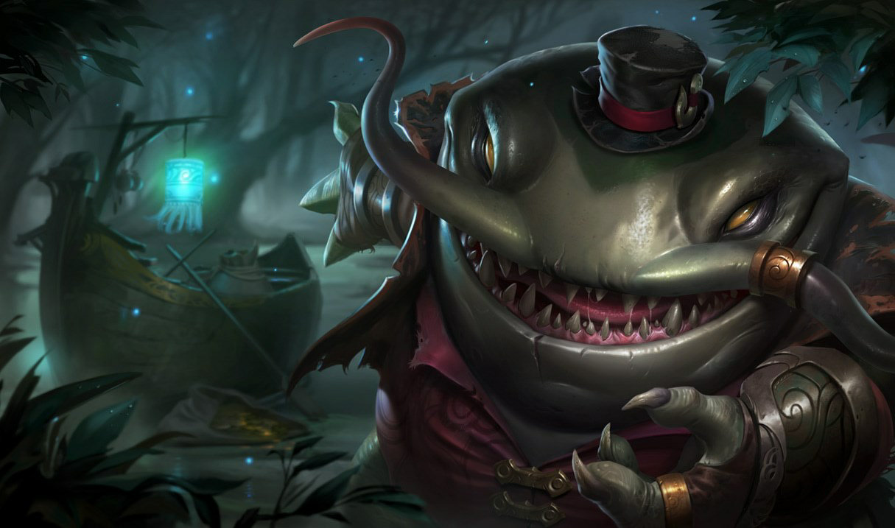

 |
Nehrin Kralı
Tarih boyunca birçok farklı adla anılan iblis Tahm Kench, Runeterra'nın nehirleri boyunca
seyahat ederek bastırılamaz açlığını insanların sefaletiyle bastırıyor. Tuhaf şekilde çekici ve
gururlu biri gibi görünse de fiziksel dünyada bir hovarda gibi salına salına dolaşarak
kendisinden şüphelenmeyecek kurbanlarını arıyor. Bir kırbaç gibi kullanabildiği dili, tepeden
tırnağa zırhla kaplı savaşçıları bile metreler ötesinden sersemletebiliyor ve avı guruldayan
midesini bir boyladı mı bir daha asla bu dipsiz çukurdan geri dönemiyor.
|